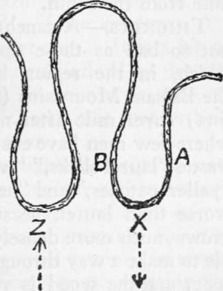

Getting Lost. Bivouacs. Part 2
Description
This section is from the book "Camping And Woodcraft", by Horace Kephart. Also available from Amazon: Camping and Woodcraft.
Getting Lost. Bivouacs. Part 2
Those who scout the idea of their ever losing bearings are such as have traveled little in strange lands, or have never ventured far without a native guide. Personally, I would rather get lost now and then than be forever hanging on to a guide's coat-tail. It is a matter of taste. Anyway, I shall never again have the willyjigs as I had 'em that first time, when I was actually within forty rods of a plain trail.
In The Mountains
There is little excuse for getting lost, in fair weather, in a mountainous or undulating country where there are plenty of watercourses, unless one gets on the wrong side of a divide that separates two streams which do not run into each other. Thus, in Fig. i, let ABC be a main divide, BD a spur to the southward separating two streams that eventually flow in opposite directions, and let X be the location of the camp. A stranger who had spent the day on the upper mountains might return toward evening to B, and, thinking to follow the creek from / to X, might turn down at e, by mistake, and travel a considerable distance before he realized that he was going in the wrong direction.
Fig. 1. Following the Wrong Stream.
Flat Woods
In flat woods, where the watercourses are few and very meandering, the vegetation rank and monotonously uniform in appearance, and landmarks rare, a man may return within 200 yards of his own camp and pass by it, going ahead with hurrying pace as he becomes more and more anxious. In Fig. 2 a man leaves camp X in the morning, going in the direction indicated by the dotted line. Ke consults his compass at intervals during the day, tries to allow for his windings, and, returning in the evening, strikes the river at Z. If he follows its bank in either direction, he is likely to spend the night alone in the woods. If the camp were at A, and the homeward-bound hunter should reach the stream at B, he would be dumbfounded to find himself, apparently, on the wrong bank of the river.
Another easy way to get bewildered is as follows: In Fig. 2 we will assume that the current runs from A toward Z, that a party unfamiliar with the river is descending it in a boat, and that one of the men leaves the boat at A, going ashore to hunt along the bank. At X he comes to the mouth of a deep creek, or some other obstruction, or he starts game that leads him back into the woods. Not long afterward he reaches the river again at Z, and, after hallooing and firing a shot or two, but getting no answer, he hurries on down-stream, thinking that the boat got ahead of him while he was making his detour. The boat, meanwhile, has been rounding a great ox-bow curve, and may be a couple of miles behind the man ashore.
Fig. 2. Ox-bow Bends.
In each of these examples the country is assumed to be fairly easy to traverse, and in each case the misadventure might have been avoided by a little forethought. A bush bent over, here and there, a blaze on a tree where the underbrush was dense, would have saved all that. Without such precautions, there are places where a man can get badly muddled in a forty-acre tract. This is no exaggeration. One of my companions once was lost from early morning until after nightfall in a thirty-acre patch of blue cane. He struggled until almost completely exhausted, and when we found him he looked like a scarecrow. At no time had he been half a mile from the cabin.
Thickets
A canebrake is bad enough, but it is not so bad as those great tracts of rhododendron which, in the region between Thunderhead and the Balsam Mountains (Tennessee and North Caro* lina) cover mile after mile of steep mountainside where few men have ever been. The natives call such wastes "laurel slicks," "woolly heads," "lettuce beds," "yaller patches," and "hells." The rhododendron is worse than laurel, because it is more stunted and grows much more densely, so that it is quite impossible to make a way through it without cutting, foot by foot; and the wood is very tough. Two powerful mountaineers starting from the Tennessee side to cross the Smokies were misdirected and proceeded up the slope of the Devil's Court House, just east of Thunderhead. They were two days in making the ascent, a matter of three or four miles, notwithstanding that they could see out all the time and pursued the shortest possible course. I asked one of them how they managed to crawl through the thicket. "We couldn't crawl," he replied, "we swum," meaning that they sprawled and floundered over the top. These men were not lost at all. In a "bad laurel" (heavily timbered), not very far from this, an old hunter and trapper who wras born and bred in these mountains, was lost for three days, although the maze was not more than a mile square. His account of it gave it the name that it bears today, "Huggins's hell".
I could give many such instances, but these will suffice to show that there still is virgin ground in some of our oldest States. The far West and the far North present problems of their own. Extensive swamps are the worst places of all, above ground. As for caves, and how not to get lost in them, I will have something to say in another chapter.
What To Do
No matter where, or in what circumstances, you may be, the moment you realize that you have lost your bearings, there is just one thing for you to do: STOPl Then sit down.
Now any man can remember that. It is a bit of "book learning" that no man can afford to despise. It is the one and only way to clear your wits, to drive off the demon of panic, and it is sure to help get you out of your predicament.
Then, if you are a smoker, light your pipe; if not, chew a twig. It won't take long for you to recover sense enough to know that if you stay right where you are until morning your companions, by that time, will be searching for you. They will be scouring the wroods, hallooing, firing guns, scouting for your trail. Suppose you do have to stay out all night, alone in the woods; nothing will hurt you. The stories of bears or panthers pouncing on sleeping men are all tommyrot. So keep your shirt on.
Continue to: